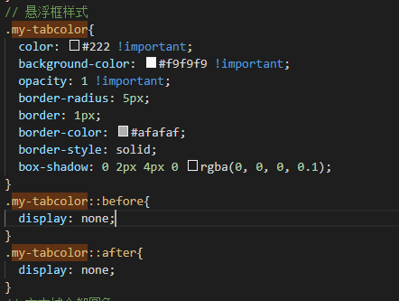

使用react-tooltip实现鼠标悬浮显示框详细记录原文出处:本文由博客园博主CN-无忧提供。
原文连接:https://www.cnblogs.com/zizaiwuyou/p/10868410.html
前段时间遇到的一个需求,要求鼠标悬停显示使用描述, 用到了react-tooltip插件,今天写一个总结
先看效果(为了方便参考,用的是原始样式):
文档参考地址:
https://www.npmjs.com/package/react-tooltip
1, 首先在配置文件加上引用
2, 然后在页面内引入:
3, react-tooltip的使用非常方便, 在需要鼠标悬停显示的标签上加上data-tip和data-html属性
比如我希望鼠标悬停在某个图标时展示提示框,代码如下:
data-tip属性是悬浮框内的文字,可以使用HTML标签形式.我的悬浮框内容就是定义的HTML片段:
<p style="text-align:left;font-size:14px;">具体支付方式说明:</p><p style="text-align:left;font-size:14px;">1.动态客户扫商户: 商户生成付款二维码，顾客用相应的钱包付款</p><p style="text-align:left;font-size:14px;">2.动态商户扫顾客: 顾客出示付款二维码，商户扫码收款</p><p style="text-align:left;font-size:14px;">3.静态客户输入金额: 顾客扫商户的静态二维码，输入付款金额，进行付款</p><p style="text-align:left;font-size:14px;">4.静态商户输入金额: 商户输入金额，顾客扫商户的静态二维码进行付款</p>
data-place属性是显示位置,我设置的是在下方显示
data-type属性是显示的样式
如果要自己定义悬浮框样式,可以在自定义的样式内加入权重覆盖原有样式,比如:

最终效果:
4, 更多插件属性和函数请参考文档:
https://www.npmjs.com/package/react-tooltip